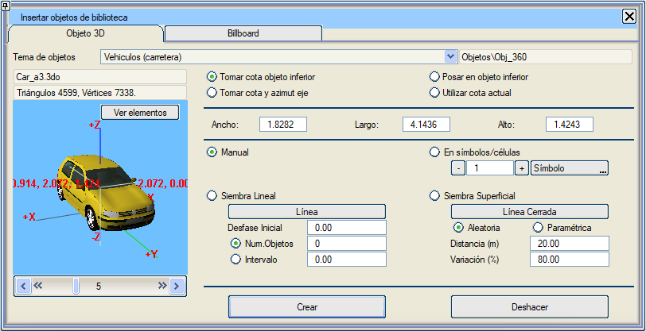

| |
|
Kütüphaneden 3B Nesne Oluşturma
|
|
Genel Bilgiler Bu seçenek, önceden tanımlanmış ve sınıflandırılmış nesneleri sahneye dahil etmeye olanak tanır. Önce dahil edilmek istenen nesne teması, ardından nesnenin kendisi ve son olarak da yerleştirme yöntemi seçilmelidir: manuel yerleştirme, doğrusal serpiştirme veya kapalı bir alan içine serpiştirme. Nesnelerin sınıflandırılması, onları tanımlayan dosyaların bulunduğu klasörler aracılığıyla yapılır. Kütüphaneye, ilgili klasörlere .3do dosyaları eklenerek yeni nesneler eklenebilir. Bu nesneler olduğu gibi kullanılabilir, herhangi bir dönüşüme ihtiyaç duymazlar, ancak kullanıcının ihtiyaçlarına göre değiştirilebilirler.  Nesne Seçimi Nesne Klasörü: eklenmek istenen nesnelerin temasını aşağıdakiler arasından seçmeyi sağlar: -Temel (işaret okları) -Aydınlatma (sokak lambaları) -Yapı Elemanları (kirişler ve kolonlar) -Binalar (evler) -Endüstriyel Elemanlar (değirmenler ve depolar) -Karayolu Elemanları (trafik işaretleri ve köprüler) -Demiryolu Elemanları (sinyalizasyon ve katenerler) -İş Makineleri (beko loder) -Kentsel Donatılar (park bankları, otobüs durakları, salıncaklar, çöp kutuları) -İnsanlar ve Hayvanlar -Trafik İşaretleri ve Kontrolü (trafik lambaları) -Kanalizasyon ve Dağıtım (altyapı elemanları) -Bitki Örtüsü (ağaçlar ve çalılar) -Karayolu Araçları (otomobiller, otobüsler, kamyonetler, kamyonlar) -Demiryolu Araçları (trenler ve metrolar) -Diğer Araçlar (uçaklar) İsim: nesneyi içeren dosyanın adı. Yorum: nesne hakkında kısa bir yorum. Klasör (Libsol içinde): nesnenin bulunduğu klasör (bir temadaki tüm nesneler aynı klasörde bulunur). Nesnenin önizleme görüntüsü. İmleç görüntünün üzerine getirildiğinde, nesne dikey ekseni (Z) etrafında döner ve farklı açılardan gösterilir. 1x1 veya 2x2 seçenekleriyle her seferinde bir veya dört nesne görülebilir. Nesnenin üçgen ve köşe noktası sayısı: grafik kartına ne kadar yük bineceğini ve ondan ne tür bir çalışma hızı beklenebileceğini bilmek için çok önemli bir bilgidir. Genişlik, Uzunluk, Yükseklik: nesnenin boyutları, nesne ölçeklenerek değiştirilebilir. Sahneden Z Al: nesne sahneye yerleştirilirken, kotunu üzerinde bulunduğu geometriden alır. Mevcut Z'yi Kullan: nesne sahneye yerleştirilirken, kotunu Harita modülündeki Mevcut Kot değerinden alır. Zemin Z'si: "Sahneden Z Al" ile aynı şekilde çalışır ancak nesneyi zemin geometrisine uyacak şekilde döndürür. Oluşturma ve Serpiştirme Nesne oluşturmanın varsayılan yolu "Manuel"dir, yani nesne sahneden seçilen noktada oluşturulur. Ancak menüde sunulan kriterlere göre otomatik olarak da yapılabilir. Sembollerde/Hücrelerde: bu yöntemle, menüde belirtilen tipteki her bir sembol veya hücrenin konumunda seçilen nesne gibi bir nesne oluşturulur. Doğrusal Serpiştirme: nesneleri bir çizgi boyunca yerleştirmeyi sağlar; çizgi üzerine konulacak toplam nesne sayısı veya hangi aralıklarla yerleştirileceği belirtilebilir. Ayrıca, ilk nesnenin çizginin ilk noktasına yerleştirilmemesi için bir "Başlangıç Ötelemesi" belirtilir. Yüzeysel Serpiştirme: nesnelerin yerleştirileceği alanı belirtmek için kapalı bir çizgi kullanılır. Serpiştirme "rastgele" veya nesneler arasındaki mesafe ve bu ızgara düğümlerine göre konumun rastgele değişimi ile parametrelendirilen düzenli bir ızgara şeklinde olabilir. Oluştur: bu buton, belirtilen nesne oluşturma işlemini yürütür. Oluşturma modu manuel ise, 3B görünümde her tıklandığında seçilen o noktada bir nesne oluşturulur ("Esc" tuşuna basılarak durdurulur). Her oluşturma işlemi arasında nesne tipi değiştirilebilir. Geri Al: gerçekleştirilen son oluşturma işlemini siler. |